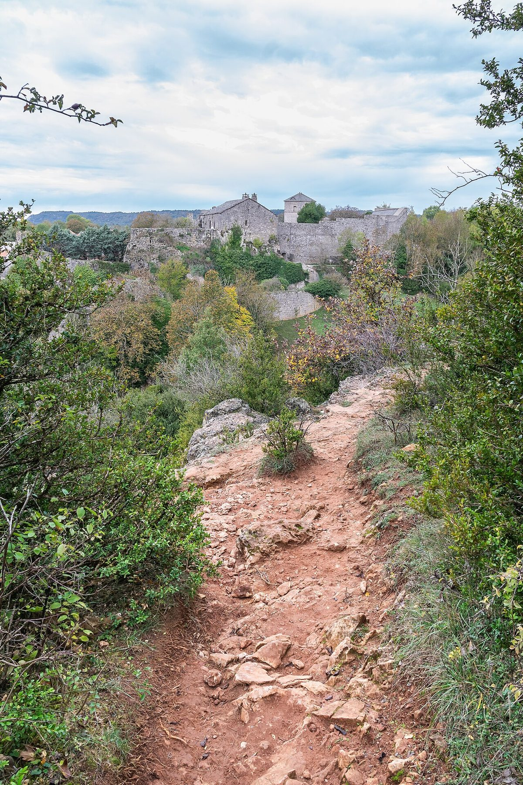

프랑스 라르작 고원 라쿠베르투아라드, 농가 지붕 148kWc 태양광 전기를 이웃 면 주민과 나누는 집단 자가소비 추진…31일 설명회

'룸 델 라르작', 농업법인 건물 지붕 800㎡ 패널 전기를 지름 20km 안 9개 면 주민에게…스마트계량기 있으면 가입, 이중 계약 없이 낮 시간 사용으로 요금 절감
프랑스 남부 아베롱주 라쿠베르투아라드에서 농가 지붕의 태양광 전기를 주변 여러 면 주민이 함께 쓰는 집단 자가소비(ACC) 사업이 추진되고 있다. 사업을 이끄는 '룸 델 라르작(Lum del Larzac)'은 10월 31일 오후 5시 라쿠베르투아라드 면사무소에서 주민 설명회를 연다. 전기원은 라쿠베르투아라드 면 라살베타에 있는 공동경영 농업법인(GAEC) 드라노크의 농업용 건물 지붕 태양광 패널로, 면적 800㎡에 용량은 148kWc다. 설비를 중심으로 지름 20km 안에서 전기를 나눌 수 있어 라쿠베르투아라드·르케일라·레리브·코르뉘·로피탈뒤라르작·낭·소클리에르·소르브·르크로 등 9개 면 주민이 참여 대상이 될 수 있다. 사업 쪽은 스마트계량기(Linky)를 갖추고 룸 델 라르작의 집단 자가소비에 가입하기만 하면 참여할 수 있으며, 전기 계약을 따로 하나 더 맺지 않고도 밤보다 낮에 전기를 쓰는 방식으로 요금을 아낄 수 있다고 설명했다. 단체의 법적 형태와 참여 가구 수, 요금 수준, 설비 가동 시점은 아직 알려지지 않았다.
시민에너지 관점
농업법인 건물 지붕 한 곳의 148kWc 설비로 9개 면 주민에게까지 전기를 나눌 수 있다는 것은, 농촌 태양광이 땅을 덮는 큰 단지가 아니어도 지역 전기를 만들 수 있음을 보여 준다. 흩어져 사는 농촌 가구가 함께하기 어렵다는 우려에는 계량기만 있으면 가입하는 간단한 절차와 거리 기준이 답이 된다. 다만 지붕을 내준 농가와 전기를 쓰는 주민이 수익과 절감액을 어떻게 나누는지가 정해져야 이 사업이 농가 한 곳의 부수입을 넘어 마을의 공동 자산이 된다. 국내 농촌에서도 축사·창고 지붕 태양광 전기를 이웃 주민이 직접 나눠 쓸 수 있도록 공동 자가소비 제도를 여는 논의를 서둘러야 한다.
출처: Journal de Millau 2026-10-30 지역 통신원 원문 보기
フランス・ラルザック高原のラ・クーヴェルトワラード、農家の屋根148kWcの太陽光電力を近隣の村の住民と分け合う集団自家消費を推進…31日に説明会
「ルム・デル・ラルザック」、農業法人の建物屋根800㎡のパネルの電気を直径20km圏内の9村の住民に…スマートメーターがあれば加入でき、二重契約なしで昼間の利用により料金節約
フランス南部アヴェロン県ラ・クーヴェルトワラードで、農家の屋根の太陽光で作った電気を周辺の複数の村の住民が一緒に使う集団自家消費（ACC）事業が進められている。事業を主導する「ルム・デル・ラルザック（Lum del Larzac）」は、10月31日午後5時にラ・クーヴェルトワラード村役場で住民説明会を開く。電源はラ・クーヴェルトワラード村ラ・サルヴェタにある共同経営農業法人（GAEC）ド・ラ・ノークの農業用建物の屋根の太陽光パネルで、面積は800㎡、容量は148kWcだ。設備を中心に直径20km以内で電気を分け合えるため、ラ・クーヴェルトワラード、ル・ケラール、レ・リーヴ、コルニュ、ロピタル・デュ・ラルザック、ナン、ソクリエール、ソルブ、ル・クロの9村の住民が参加対象となりうる。事業側は、スマートメーター（Linky）を備え、ルム・デル・ラルザックの集団自家消費に加入するだけで参加でき、電気の契約をもう一つ結ばなくても、夜より昼に電気を使うことで料金を節約できると説明した。団体の法的形態や参加世帯数、料金水準、設備の稼働時期はまだ明らかになっていない。
市民エネルギーの視点
農業法人の建物の屋根1か所の148kWcの設備で9村の住民にまで電気を分けられることは、農村の太陽光が土地を覆う大規模団地でなくても地域の電気を生み出せることを示している。散らばって暮らす農村の世帯が一緒に参加するのは難しいという懸念には、メーターさえあれば加入できる簡単な手続きと距離の基準が答えになる。ただし、屋根を提供した農家と電気を使う住民が収益と節約分をどう分けるかが決まってこそ、この事業は農家1軒の副収入を超えて村の共同資産になる。韓国の農村でも、畜舎や倉庫の屋根の太陽光電力を近隣住民が直接分け合えるよう、共同自家消費の制度を開く議論を急ぐべきだ。
出典: Journal de Millau 2026-10-30 地域通信員 原文を読む
法国拉尔扎克高原拉库韦尔图瓦拉德推进集体自消费，把农场屋顶148kWc光伏电力分给邻近市镇居民…31日举行说明会
"拉尔扎克之光"将农业合作经营体建筑屋顶800平方米光伏板的电力供应直径20公里内9个市镇居民…有智能电表即可加入，无需双重合同，白天用电可省电费
法国南部阿韦龙省的拉库韦尔图瓦拉德正在推进一个集体自消费（ACC）项目，让周边多个市镇的居民共同使用农场屋顶光伏发出的电。牵头的"拉尔扎克之光"（Lum del Larzac）将于10月31日下午5点在拉库韦尔图瓦拉德镇政府举行居民说明会。电力来自拉库韦尔图瓦拉德镇拉萨尔韦塔的农业合作经营体（GAEC）德拉诺克农业建筑屋顶上的光伏板，面积800平方米，容量148kWc。由于可在以设施为中心、直径20公里的范围内分配电力，拉库韦尔图瓦拉德、勒凯拉尔、莱里夫、科尔尼、洛皮塔勒迪拉尔扎克、南特、索克利埃尔、索尔布、勒克罗等9个市镇的居民都可能成为参与对象。项目方介绍，只要装有智能电表（Linky）并加入"拉尔扎克之光"的集体自消费即可参与，无需另签一份电力合同，把用电从夜间移到白天就能节省电费。该团体的法律形式、参与户数、电价水平和设施投运时间尚未公布。
市民能源视角
一处农业建筑屋顶上148kWc的设施就能把电分到9个市镇的居民，说明农村光伏不一定要铺满土地的大型电站，也能为本地发电。对于农村住户分散、难以共同参与的担忧，只需电表即可加入的简便手续和距离标准就是答案。不过，只有把出让屋顶的农户与用电居民如何分配收益和节省的电费确定下来，这个项目才能超越一户农家的副业收入，成为村庄的共同资产。韩国农村也应加快讨论开放集体自消费制度，让邻近居民能够直接分享畜舍和仓库屋顶的光伏电力。
来源: 米约日报（Journal de Millau） 2026-10-30 地方通讯员 查看原文
La Couvertoirade on France's Larzac plateau plans collective self-consumption sharing 148 kWc of farm-roof solar with residents of neighbouring communes; public meeting on 31 October
'Lum del Larzac' would supply power from 800 square metres of panels on a farm partnership's building to residents of nine communes within a 20 km diameter; anyone with a smart meter can join, with no second contract and savings from daytime use
In La Couvertoirade, in the Aveyron department of southern France, a collective self-consumption (ACC) project is being prepared that would let residents of several surrounding communes share electricity from solar panels on a farm roof. 'Lum del Larzac', which is leading the project, will hold a public information meeting at La Couvertoirade town hall at 5 p.m. on 31 October. The power source is a set of solar panels on the roofs of agricultural buildings belonging to the GAEC de la Nauq farming partnership at La Salvetat in the commune of La Couvertoirade, covering 800 square metres with a capacity of 148 kWc. Because the electricity can be shared within a 20 km diameter around the installation, residents of nine communes, La Couvertoirade, Le Caylar, Les Rives, Cornus, L'Hospitalet-du-Larzac, Nant, Sauclières, Sorbs and Le Cros, could take part. According to the project, all that is needed is a Linky smart meter and membership of Lum del Larzac's collective self-consumption scheme, and households can save on their bills without taking out a second contract by using electricity during the day rather than at night. The group's legal form, the number of participating households, the price level and when the installation will start supplying power have not been disclosed.
Citizen Energy View
That a single 148 kWc installation on one farm building could share power with residents of nine communes shows that rural solar can produce local electricity without large ground-mounted parks covering farmland. To the worry that scattered rural households find it hard to take part together, a simple sign-up requiring only a meter and a distance rule offer an answer. But only once it is settled how the farm that provides the roof and the residents who use the power will share income and savings can the project become a shared village asset rather than side income for one farm. Rural Korea should move quickly to discuss opening up collective self-consumption so that neighbours can directly share solar power from barn and warehouse roofs.
Source: Journal de Millau 2026-10-30 Local correspondent Read the original